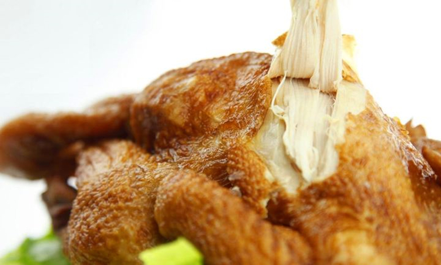

宝丰买根烧鸡以已故买根名字命名，为宝丰少数民族清真特色食品，以香、嫩、烂、味美而著称，已有百余年历史，2003年申请注册国家商标。买根烧十余种天然名贵佐料，煮后香味四溢，满巷皆闻，口味独特、营养丰富鸡制作精细，原料选用生鲜活柴鸡，每只均由清真寺阿訇进行屠宰。老汤内有二，味道鲜美，滋补强身。
友情链接：平顶山市人民政府 平顶山旅游政务网 平顶山地情网 平顶山天气预报 平顶山地图
版权所有 © 2018 河南大学环境与规划学院 中国·河南·开封·河南大学金明校区
电话：18637886278 电子邮件：giserwangziheng@163.com 邮编：475000